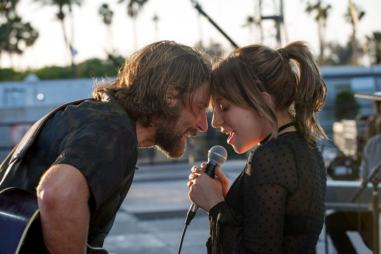
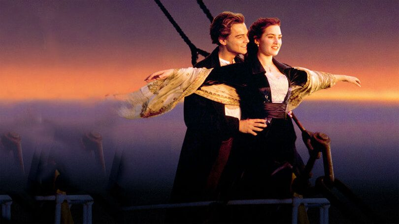
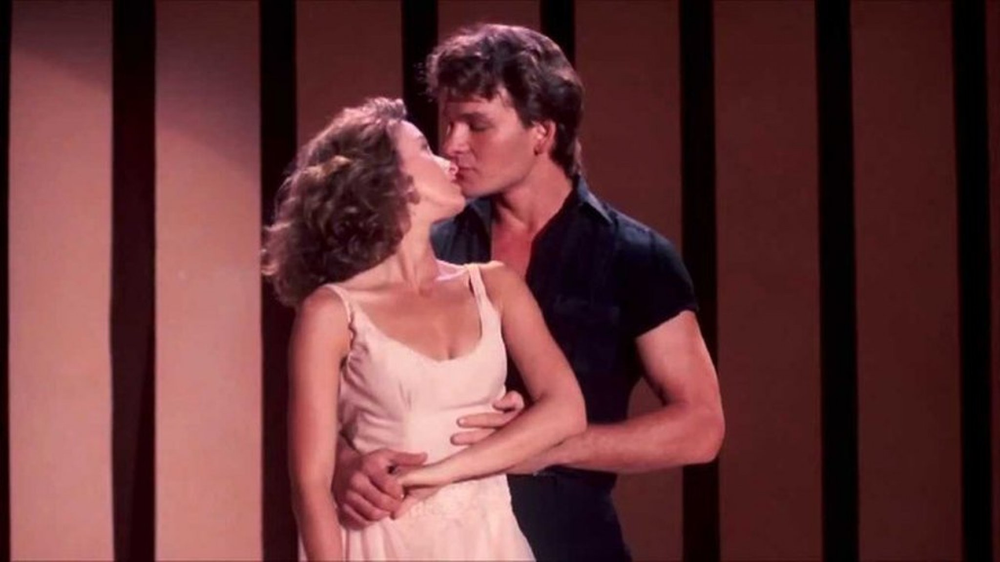
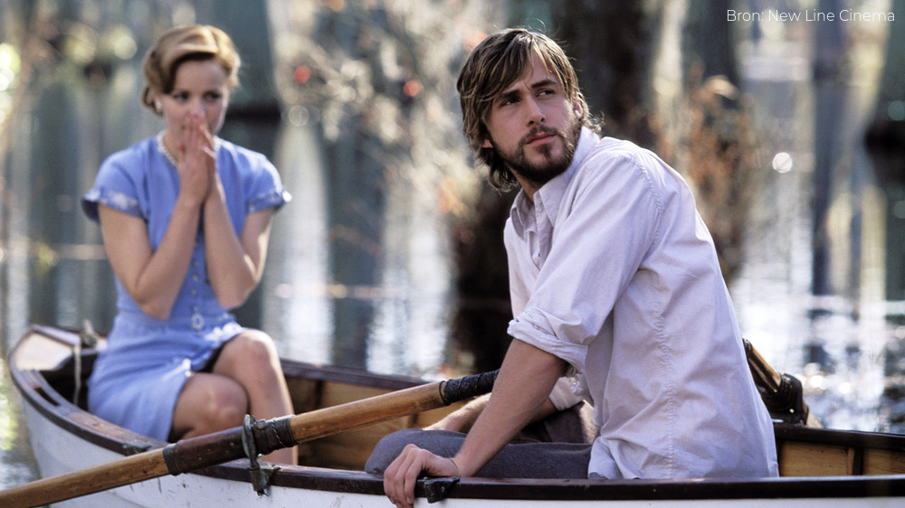
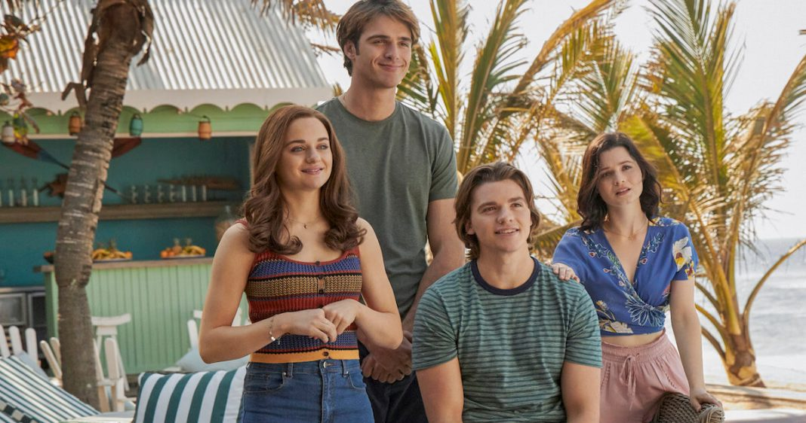

1 / 5

A star is born
A Star Is Born is een Amerikaanse muzikale romantische film uit 2018. A Star is Born vertelt het
verhaal van Jackson Maine (Bradley Cooper), een in verval geraakte country-ster. Hij ontdekt het
onbekende talent Ally (Lady Gaga). De twee krijgen een liefdesverhouding en Jack probeert Ally
in de schijnwerpers te krijgen. Wanneer dit lukt, krijgt Jack zelf moeite met het feit dat hij
steeds meer in de schaduw komt te staan.
2 / 5

Titanic
Titanic is een film uit 1997. James Camerons Oscarwinnende drama over een onmogelijke liefde op
een schip dat onmogelijk zou kunnen zinken. Het is onmogelijk om de Titanic te laten zinken,
beloven de bouwers. Twee van de reizigers op het schip zijn Rose en Jack. Ze zijn geliefden,
maar hun liefde is onmogelijk. Want de rijke Rose reist eersteklas met haar onsympathieke
verloofde Cal en Jack is een armoedzaaier in de derde klas. Een kleiharde strijd tussen Jack en
Cal brandt los, en wanneer het schip zinkt wordt het een strijd op leven en dood. 'Titanic'
heeft menigeen tot tranen bewogen, won elf Oscars - waaronder die voor beste film en die voor
beste regisseur - en maakte van Leonardo DiCaprio en Kate Winslet sterren. Het is dan ook een
wondermooie film, wellicht wel de mooiste liefdesfilm ooit.
3 / 5

Dirty dancing
Dirty Dancing is een muzikale film uit 1987 over een meisje dat verliefd wordt op haar
dansleraar, die ze leert kennen wanneer ze met haar ouders op vakantie is. Ze leert van hem de
Mambo, een sensuele Latijns-Amerikaanse dans. Frances Houseman, bijgenaamd Baby, brengt de
zomervakantie door in een vakantiepark in Catskills. Daar ontmoet ze de sexy dansinstructeur
Johnny Castle en zij valt als een blok voor hem. Hij is alleen niet in haar geïnteresseerd.
4 / 5

The notebook
The Notebook is een film uit 2004. Tijdens een vakantie ontmoet Allie de knappe Noah. Ondanks de
verschillende achtergronden beleven ze een zomer vol passie. Als de Tweede Wereldoorlog
uitbreekt, verliezen ze elkaar uit het oog. Een doorleefde man beschrijft vanuit zijn versleten
dagboek het ongeloofl ijk meeslepende liefdesverhaal van Allie en Noah: De jonge Allie Hamilton
(Rachel McAdams) wordt op haar vakantie hopeloos verliefd op de knappe Noah Calhoun (Ryan
Gosling) en ze beleven een onvergetelijke zomer vol hartstocht en passie. Onder druk van haar
ouders verliezen de twee elkaar uit het oog. Als Allie op het punt van trouwen staat met de man
die wel door haar ouders goedgekeurd wordt, slaat de twijfel toe. Kiest ze voor de liefde van
haar leven of kiest ze voor haar ouders goedkeuring.
5 / 5

The kissingbooth
The Kissing Booth is een romantische komedie uit 2018. Wanneer de eerste kus van de tiener Elle
leidt tot een verboden romance met de knapste jongen van de school, zet ze haar relatie met haar
beste vriend op het spel.
❮
❯